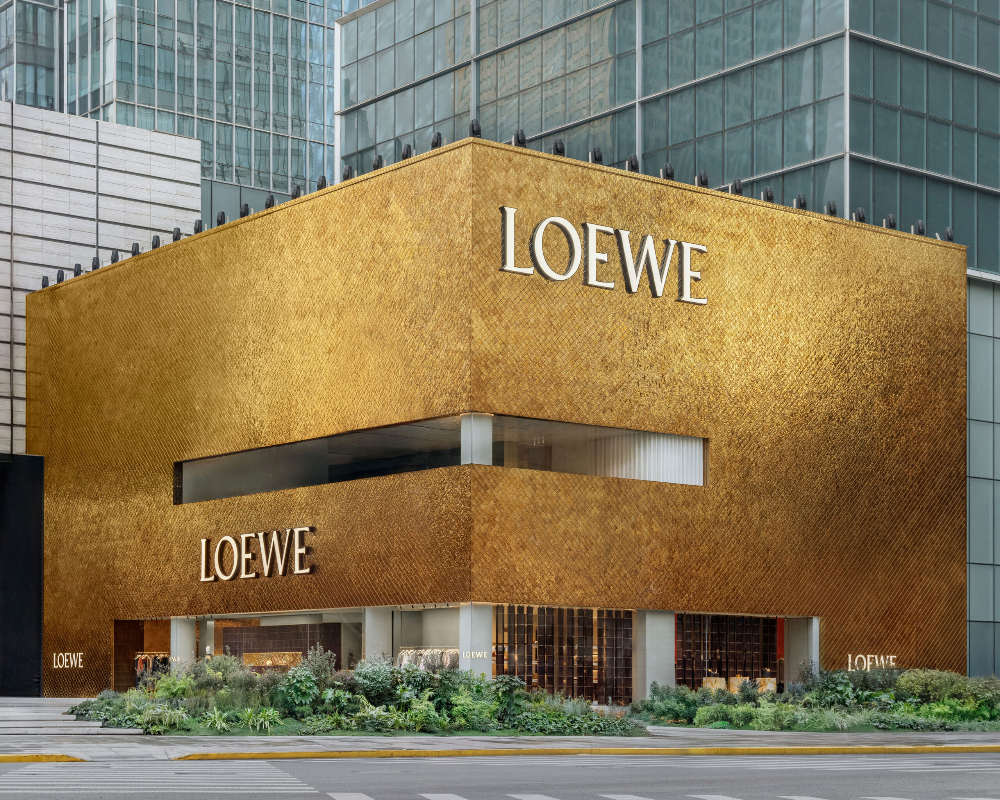

Louis Vuitton has docked a ship on the Huangpu River. Loewe has opened Asia’s largest flagship. Gucci is staging an exhibition dedicated to bamboo. Shanghai is no longer fashion’s next city. It is fashion’s now.
For decades, the luxury conversation about China followed a familiar script. The market was emerging, the consumer was aspirational, the opportunity was future tense. That language no longer applies. Shanghai in 2026 is the most architecturally ambitious luxury retail city on earth, and the European houses are building there with a commitment that exceeds anything they have attempted in London, Milan or New York in the past ten years.
The numbers demand it. China remains the luxury industry’s key growth engine. Core luxury shoppers are increasing their spending even as casual buyers pull back. But what is happening in Shanghai goes beyond commercial logic. The city has become a laboratory for what luxury retail can be when unconstrained by heritage buildings, conservation restrictions and the polite caution that governs European flagships.
The ship
Louis Vuitton’s The Louis is the most striking example. The structure takes the form of a ship’s façade, sitting at the edge of the Bund with the Pudong skyline as its backdrop. It is not a store in any conventional sense. It is an all-encompassing luxury space dedicated to retail, café and innovation, combining shopping with Le Café Louis Vuitton and a Visionary Journeys exhibition that traces the house’s relationship with travel from trunk-maker to global cultural force.
The ambition is deliberate. Shanghai’s consumers do not simply buy luxury goods. They demand experiences, environments and narratives. A handbag in a vitrine is no longer sufficient. The product must exist inside a world. Vuitton has understood this earlier and more completely than most of its competitors, and The Louis represents the logical conclusion of that understanding: a building that is simultaneously a shop, a restaurant, a gallery and a statement of intent.
Shanghai does not follow the luxury playbook. It rewrites it. Every European house that builds here discovers what retail looks like when ambition has no ceiling.
Léa FontaineThe house
Loewe’s approach is quieter but equally significant. Casa Loewe Shanghai is the brand’s largest flagship in Asia, and it operates on a principle that Jonathan Anderson has embedded in every aspect of the house: craft and art are not decorations for a retail space but the reason the space exists. The store features a thoughtful curation of globally renowned art and design, blurring the boundary between gallery and boutique in a way that feels natural in Shanghai and would feel forced almost anywhere else.
The location matters. Shanghai’s luxury retail geography has shifted from Nanjing Road to a constellation of districts. The former French Concession, Jing’an and the West Bund cultural corridor each attract different houses and different clienteles. Loewe’s positioning within this landscape reflects the brand’s understanding that Shanghai’s luxury consumer moves between neighbourhoods with the same fluency that a Parisian moves between arrondissements.

Casa Loewe Shanghai, the brand’s largest flagship in Asia. Photography courtesy of CR Fashion Book
The exhibition
Gucci’s contribution takes a different form entirely. The house staged an exhibition in Shanghai dedicated to the legacy of the Bamboo 1947 handbag, one of the most recognisable objects in fashion history. The exhibition traces the bag from its post-war Florentine origins through seven decades of reinterpretation, connecting it to figures from Princess Diana to Elle Fanning. It is a museum show staged by a fashion house, and it treats the product with the seriousness that Shanghai’s audience expects.
This is the pattern that defines Shanghai’s luxury moment. Each house arrives with something more than a shop. Vuitton brings a ship. Loewe brings a gallery. Gucci brings an exhibition. The city has raised the threshold for what counts as a meaningful presence, and the houses are responding with investments that would have been unthinkable a decade ago.
The consumer
Shanghai’s fashion consumer in 2026 is not the aspirational buyer of received wisdom. The city’s core luxury shoppers are spending more, not less, even as the broader economy applies pressure elsewhere. Gen Z has shifted away from statement handbags toward smaller, more considered purchases. Beauty, fragrance and accessories have gained ground. But the defining characteristic of Shanghai’s consumer is not what they buy. It is how they buy. The expectation is for immersion. The store must be worth visiting even if you leave without a purchase.
Concept stores like SND, which operates twelve locations across China, have shaped this expectation. SND stocks a mix of local and international designers with an editorial sensibility that treats retail as curation. The influence runs upward. When Loewe or Vuitton builds in Shanghai, they are competing not only with each other but with a local retail culture that has already redefined what a shop can be.
Shanghai Fashion Week, held twice yearly at Xintiandi, has become the platform where Chinese designers reach an international audience without leaving home. The aesthetic is distinct. Clean silhouettes sit alongside experimental layering. Colour is used with a confidence that owes nothing to European restraint. Designers like Uma Wang, who maintains her own stores in mainland China, have demonstrated that a global career can be built from Shanghai rather than Paris.
The Western luxury houses are not colonising Shanghai. They are adapting to it. The city’s architectural ambition, its consumer sophistication and its appetite for novelty have created conditions that do not exist anywhere else. When Louis Vuitton builds a ship on the Huangpu, it is not imposing a Parisian idea on a Chinese city. It is responding to a city that demands nothing less.